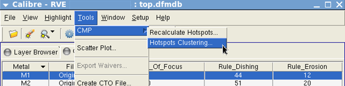
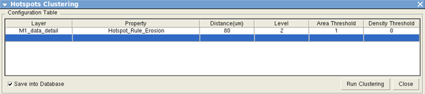
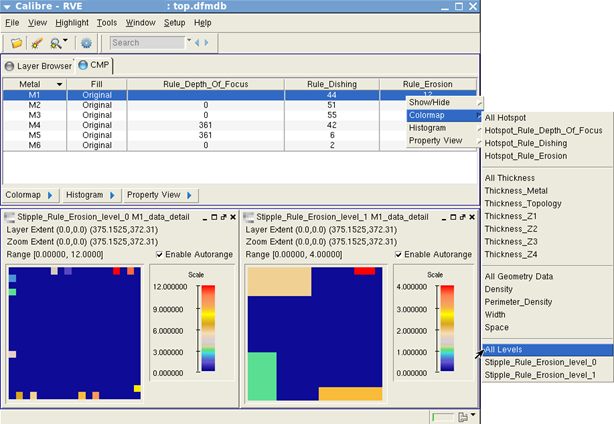
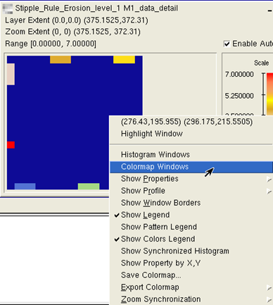
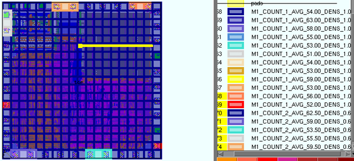

You can use Calibre RVE for DFM and the
Calibre CMPAnalyzer GUI to set up and run CMP hotspots clustering
and visualize the saved results.
Procedure
- Start Calibre RVE for DFM and specify your CMP
analysis DFM database using one of two methods:
From Calibre DESIGNrev, choose Verification > Start
RVE and perform the following actions in the dialog
box:
Enter the full path and name of your DFM database.
Choose Database Type DFM.
Click Open.
From a Calibre command line, enter the following:
calibre -rve -dfm dfmdb/TOP_CHIP.dfmdb
- Choose in
the CMP tab in the Calibre RVE for DFM GUI.
Figure 1. Tools
— CMP Hotspots Clustering
- In the
Hotspots Clustering window, define the Layer and Property fields.
Set the clustering distance in microns and the number of cluster
levels in the Distance and Level fields.
The clustering distance is the maximum distance between
the hotspot clusters for merging to occur.
The number of cluster levels achieved during the run
may be less than the number specified if no more clustering can
be done within that distance. The default behavior is to build the
maximum number of cluster levels and stop when no more clusters
fit the specifications.
Figure 2. Hotspots
Clustering Window
The Area Threshold and Density Threshold settings have
default values of 1 and 0, respectively. These range settings can
be used to control the coverage of the cluster area on the chip
and the single‑pixel density of the clusters. See cmp::run_clusterization
in “CMP YieldServer Command Reference”.
The “Save into Database” setting is enabled by default.
This saves the clustering data to the DFM database.
- Click Run
Clustering to start the run.
- After the
run finishes, access the colormap menu using either of these methods:
- Choose “Stipple_Rule_property_
level_number”
to view the hotspot clustering by level or choose All Levels.
Figure 3. Hotspots
Clustering Colormaps
Coloring is according to the density of the hotspots
in the cluster. For example, the cluster with the largest number
of single‑pixel hotspot density is colored red, while the cluster
with the smallest number of single-pixel hotspot density is colored
blue.
- (Optional) If you are connected to Calibre RVE
for DFM from Calibre DESIGNrev (or other layout viewer), right‑click
on a cluster colormap and choose Colormap
Windows to highlight the cluster information in the
layout viewer.
Figure 4. Hotspots Clustering Colormap Windows
The labels for the highlighted layers contain
the layer name, hotspot count, average value, and density for each
cluster. The hotspot density for the cluster is defined as the ratio
of the number of single‑pixel hotspots in the cluster and the number
of pixels in the cluster.
Figure 5. Hotspots Clustering Layout View Information
For example:
M1_COUNT_6_AVG_36.33_DENS_1.00
This label represents a cluster that contains
six hotspots, with an average value of 36.33, and a hotspot density
of 1.00, which means that all pixels in the cluster are single‑pixel hotspots.
Results
You have used Calibre RVE for DFM and the
Calibre CMPAnalyzer GUI to generate, save, and view the CMP hotspots
clustering data. Optionally, you have viewed hotspots clustering information
in a connected layout viewer.